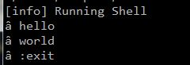
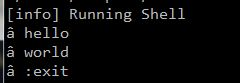
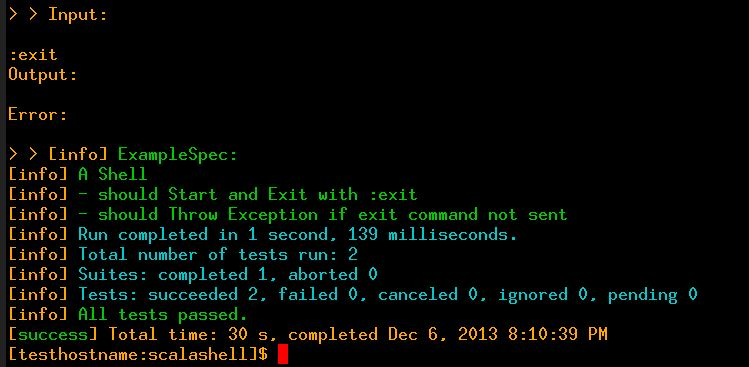

Testing PShell with a Crude Console Execution Harness
Tags:Since my last post on it, the Empty Shell Project (now known as PShell) has moved forward a bit. I revised the shell itself, and moved it from the Source API to the Console API. I also built a special (but crude) Shell Execution Harness to isolate and capture I-O. Test-Driven Development TDD (or BDD - Behavior Driven Development) is the way we will develop this project, but it puts a heavy up-front load of system infrastructure preparation on. However, frameworks and harnesses need to be in place to execute automated tests before we can move much further.
But first, let’s examine changes made to the PShell:
Empty Shell using the Source API
1 2 3 4 5 6 7 8 9 10 11 12 | /* Old shell code based on the Source API */ import scala.io.Source val prompt = '>' System.out.print(prompt) for (line <- Source.stdin.getLines.takeWhile(_ != ":exit") ) { System.out.print(prompt) } |
Above is the code for the old version of the shell using the Source API. Source has a lot going for it in terms of console development. The API has a rich feature set. There is code elegance (and a bit of aggravation) when taking continually blocking line-by-line input via the Source.getLines() method, but there is abstraction and decoupling from named input devices, which is nice. The Source API possesses a number of attractions, but at the expense of potentially shooting yourself in the foot with library choices and extra code.
Empty Shell based on the Console API
The new PShell code is listed below. I decided to move over to the Console API for rightness. Why use a generalization when you have a more specific interface avilable that is prewritten and dedicated to the task? Until it fails to meet the project’s needs, the most direct means is surely what should be rightfully used. Although it offers a thinner interface, the Console API has some high-level functions dealing with redirection and color changes. It is also rumored to limit blocking calls to the current thread. 1 Since I am considering using multi-threaded programming in a future iteration of the Console Execution Harness (described later in this post) I would rather use an API that makes it easier to isolate context.
One immediate and noticable difference using the Console API in place of the Source API is that Console.getLine() only takes a single line of input at a time instead of continually grabbing lines and blocking, as Source.getLines() does. This drops dependency on a fragile and hard-to-break-out-of iterator that Source.getLines() uses.
1 2 3 4 5 6 7 8 9 10 11 12 13 14 15 16 17 18 19 20 21 22 23 24 25 26 27 | /* New shell code based on the Scala Console API */ package shell { case object PShell { def run = { val prompt = coding(System.getProperty("file.encoding")) + " " var line: String = new String while (line != ":exit") // :exit ends this application { Console.print(prompt.toString) line = Console.readLine.toString Console.out.println("[" + line + "]") } } private def coding(x: Any) = x match { case "UTF-8" => 0x2794.toChar case _ => '>' } } } |
Introducing a UTF-8 Problem
UTF-8 is the modern, multilingual encoding standard that makes it possible to have cool prompts, like real UTF-8 arrows. Unfortunately, it also requires support programatically (in the PShell) and in the user’s console software. I wanted the shell to be UTF-8 capable in some way.
UTF-8 encoding is fully supported on the Microsoft platform, but is still largely unsupported on FreeBSD, and does not come by default at runtime with either Java or Scala. Both the programmer and the user have to work to get it. IS0-8859-1 (Latin-1) is the default encoding for any JVM instance and you can really only view UTF-8 easily on FreeBSD via XWindows by supplying a special switch to Xterm. Basically, this means UTF-8 may not work at all on some systems, but on others both the code and the user will have to enable things to make it work. Yet on others, such as MS Windows, users should be able to enable it with minimal effort.
As far as Scala source code is concerned, both the Source API and Console API are able to write UTF-8 bytes to streams even after the JVM has been started with another type of character encoding. This is because they both work (or can be made to work in the case of the Source API) with java.io.PrintStream, which harkens back to java.io.OutputStream, which can be configured to read bytes independent of the JVM’s currently established encoding. So if you write carefully-crafted code and the user has a UTF-8 capable console, you can force the program to run in UTF-8 mode on the client machine. But this isn’t something a non-Windows user would like.
The real problem with UTF-8 lies in the fact you can’t directly determnine from a program whether someone’s terminal is actually capable of portraying UTF-8 characters correctly. You can read from the UNIX > locale command but if that hasn’t been set correctly it won’t match the user’s terminal capabilities. And then even if everything is copacetic there is still the issue of reliability and implementation with consoles that claim to support UTF-8.
Below are two pictures. The first is an Xterm whose UTF-8 switch has been enabled with:
> xterm -en UTF-8.
It displays a UTF-8 prompt correctly. The second picture shows a Putty session where UTF-8 has not been configured properly for the terminal. It displays a garbage character for the prompt. So the deal here is that forcing UTF-8 on people, even if your program is using some weak autodetection technique is the wrong choice, because it holds the potential to mess things up too much.
 

A more reasonable approach is to allow the user to run the code in UTF-8 Mode if he or she wants to. This means he or she would start Scala runtime by passing in the JVM switch:
> scala -Dfile.encoding=UTF-8 some_scala_class
which establishes UTF-8 as the default encoding scheme for the duration of runtime for this instance of the virtual machine. Although it requires users to supply a switch at runtime, the benefit of this approach is that it’s more reliable and easier to support in code when the global default is being used. You can easily detect whether the user passed in the UTF-8 switch to the JVM by reading the file.encoding property from from Java system properties, and then you know everything is UTF-8 for the session. So this is the approach we use in the new PShell.
Other changes to PShell
There were a couple of things having to do with wrappers that changed. I gave the object encapsulating the shell code a package shell namespace, so it could be referred-to by a superficial driver. I also put the basic shell code into a PShell.run method because I wantd to divorce running the shell code from startup of the singleton object containing it. I’m not sure if it matters much, but it allows inspection of the object’s methods to occur if it is run inside the REPL (Scala’s interactive shell).
Below is the driver code. Note the import namespace shell.Pshell refers to the namespace of shell and the name of the singleton object contained therein: (PShell). This is how classes and objects refer to each other across files so they can compile as one during build. Actual filenames don’t matter in Scala as they do in Java. I chose main.scala for the driver below, and shell.scala for the PShell codeblock listed above. I placed both these files in my project’s src/main/scala subdirectory as it is the required convention for the SBT build system. The Empty Shell post goes into the details of how to get the project started with SBT.
1 2 3 4 5 6 7 8 9 10 11 | /* PShell driver */ import shell.PShell object Shell { def main (args: Array[String]) { PShell.run } } |
The Console Harness
The ConsoleHarness singleton object is the programmatic interface which the ScalaTest framework will use to run tests on the PShell.
To run a test on the PShell console object, some test commands get placed into a string, one line of code runs the test, and results are returned for the stdin, stdout and stderr recorded during the run. Our tests in the ScalaTest framework can then compare the input to the results for PASS or FAIL outcomes. When setup with SBT using the ~ test directive in another dedicated console, the results are reported to us every time we make a change to any source files or test sources. With these tools, we can measurably move forward with PShell development by writing test specs that initially fail, then add or fix code to make the tests pass, and move on to specifying and developing another feature without unknowingly breaking anything that works.
ConsoleHarness helper object
I’ve committed a scala script you can run, demonstrating the ConsoleHarness at GitHub. It contains a complete description of the usage, but I will recount a short version here, and describe a litte how it works.
For our PShell project, as mentioned above, the steps to run a test with ConsoleHarness are:
1 2 3 | 1. Place some test commands in a String. 2. Write one line of code to execute the test commands in the harness on PShell. 3. Get the results of the test and analyze. |
So, for example, if we wish to say: “Hello World!” on one line of input and “Goodbye World!” on another line and exit PShell, we write something like this:
1 2 3 | val input = "Hello World!, Goodbye World!" val ConsoleHarness(first, second, third) = ConsoleHarness(PShell.run, input, ":exit") // The text results are now stored in the vals stdin, stdout and stderr for analysis. |
For the input val, the contents of each comma-separated field represents a line of input to send the PShell. Whitespace is trimmed at the leading and trailing ends of each field before it is sent. ConsoleHarness adds a platform-specific newline to execute each user command in the PShell. When it is done issuing user commands, it sends the command to exit the shell, which PShell recognizes as “:exit”.
The second line of code above has two references to ConsoleHarness on both sides of an assignment operator. This is an extractor construct, which basically filters data from the right to left.
val ConsoleHarness(first, second, third) = ConsoleHarness(PShell.run, input, ":exit")
The right-hand side of the extractor construct runs the apply() method implicity. This method reattaches stdin, stdout and stderr to separate IO streams that display nothing. It then invokes the PShell.run method, and captures the attached streams returning them in a map keyed by quoted words “stdin”, “stdout” and “stderr”.
The left-hand side of the extractor construct runs the unapply() method implictly, and accepts a Map of the captured streams on input, returning them in order to the declared varables: first, second and third , where the contents of those streams can be read like text files and evaluated.
There is no sophisticated interaction between the streams.2 Input is sent in its entirety as one streaming file. stdout and stderr are recorded entirely as a streaming files. Input streams in, output streams out, and the files are closed when the program exits gracefully.
The code for ConsoleHarness may belong in a separate file, but I’ve placed it just below the test source code blocks (shown further below) in the same file as a kind of helper object for now. Both the test code and this object are in a file located in the project’s test subdirectory: src/test/scala/PShellTest.scala
1 2 3 4 5 6 7 8 9 10 11 12 13 14 15 16 17 18 19 20 21 22 23 24 25 26 27 28 29 30 31 32 33 34 35 | object ConsoleHarness { val eol = System.getProperty("line.separator") def apply(runapp: => Any, cmds: String, exit: String): Map[String,String] = { val cmdString = cmds.split(",").map(_.trim).mkString(eol) + eol + exit val inS = new java.io.StringReader(cmdString) Console.setIn(inS) val outS = new java.io.ByteArrayOutputStream Console.setOut(outS) val errS = new java.io.ByteArrayOutputStream Console.setErr (errS) runapp Map("stdin" -> cmdString, "stdout" -> outS.toString, "stderr" -> errS.toString) } def unapply(iomap: Map[String,String]): Option[(String, String, String)] = { Console.setIn(System.in) Console.setOut(System.out) Console.setErr(System.err) if (iomap.size > 0) Some(iomap("stdin"), iomap("stdout"), iomap("stderr")) else None } } |
The scalatest sources below use the execution harness above, and run two basic tests to see if the PShell starts and shuts down predictably. The first test sends no user commands in an empty string, but sends the :exit command to the PShell. It’s a kind of smoke test that exercises a minimal set of operations on the shell to confirm it will end gracefully when given the correct exit. The second test tries to get the PShell to end disgracefully by omitting the required :exit command, which should trigger an exception. If the first test exits without an exception, it is a PASS. If the second test triggers with an exception it is a PASS.
1 2 3 4 5 6 7 8 9 10 11 12 13 14 15 16 17 18 19 20 21 22 23 24 25 26 27 28 29 30 | import org.scalatest._ import shell._ class ExampleSpec extends FlatSpec with Matchers { "A PShell" should "Start and Exit with :exit" in { val exitCmd = ":exit" val shellCmds = "" val ConsoleHarness(stdin, stdout, stderr) = ConsoleHarness(PShell.run, shellCmds, exitCmd) println("Input:\n" + stdin) println("Output:\n" + stdout) println("Error:\n" + stderr) } it should "Throw Exception if exit command not sent" in { val exit = "" val commands = "" intercept[Exception] { val ConsoleHarness(stdin, stdout, stderr) = ConsoleHarness(PShell.run, commands, exit) } } } |
Here is a screen capture of the output of a test run by SBT. It shows stdin, stdout and stderr from the test, followed by green and blue test with a success statement from ScalaTest indicating both tests pass. For test failures, you will see red text.
Well, that’s about it for now. I’ll try to build some shell functions and tests in another blog post.

-
According to chatter on StackOverFlow. ↩
-
To get sophisticated line-by-line interaction betweeen streams we will likely need to employ pipes and Actors, which are threads that communicate with one another asynchronously through a mailbox scheme. I may further develop into this path. But for now, this crude harness will work for one or two commands at a time. The complexity of this task indicates one of the problems in TDD. In some cases, you need to make proper test frameworks from scratch whose development time and complexity can exceed the time and complexity of the original thing you are trying to build. In fact, it may become complex enough to require testing itself. ↩